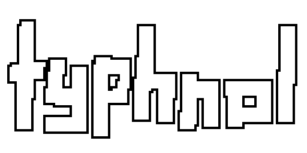
doodles
sketches doodles whatever
3/25/26
HAPPY 10TH UNDERVERSARY!!! im actually like a day or two late the anniversary was on 3/23


2/13/26
saw the sans hard mode concept art from twitter and wanted to draw this expression on him... also saw a post with more canon aligned dialogue and i really liked it so i used that
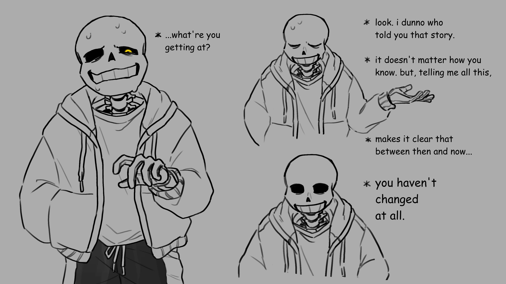
2/1/26
im not as crazy over this guy but he's still a fun fellow (edit: nevermind i am crazy over this guy damn you rahafwabas)
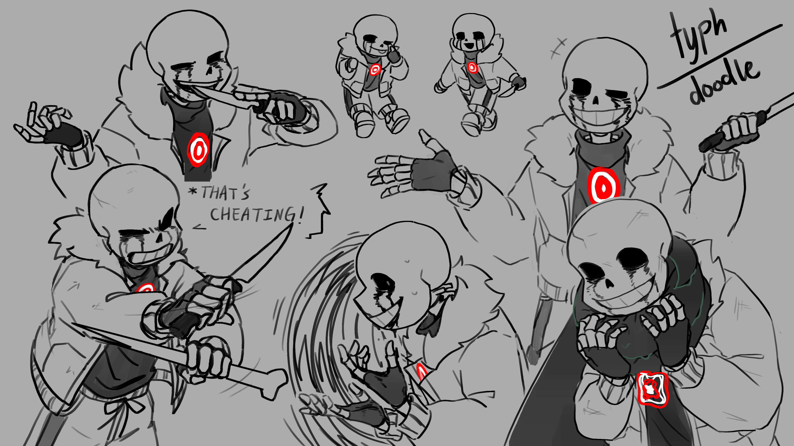
1/18/26
friday night dustin is very cool... i just wanted to draw him singing his heart out
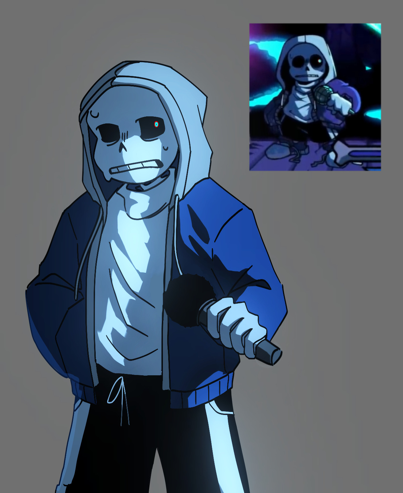
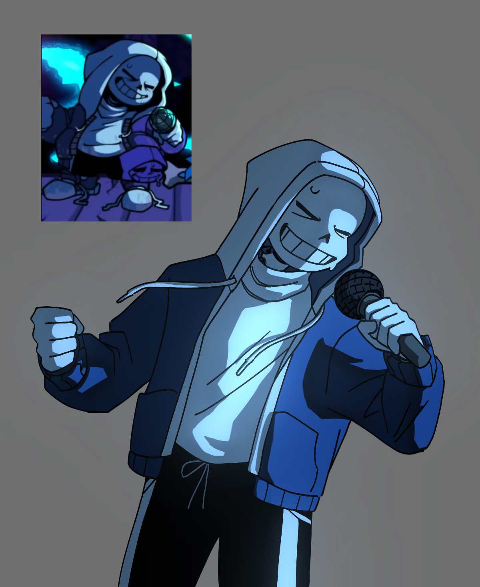
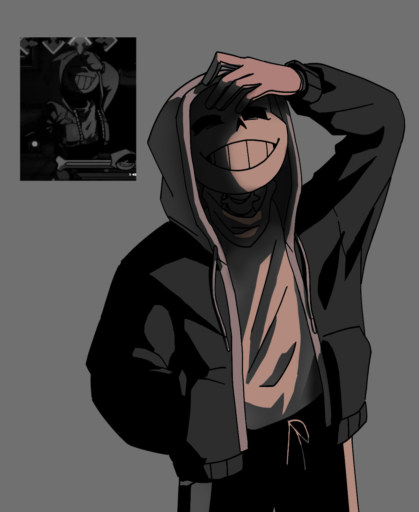
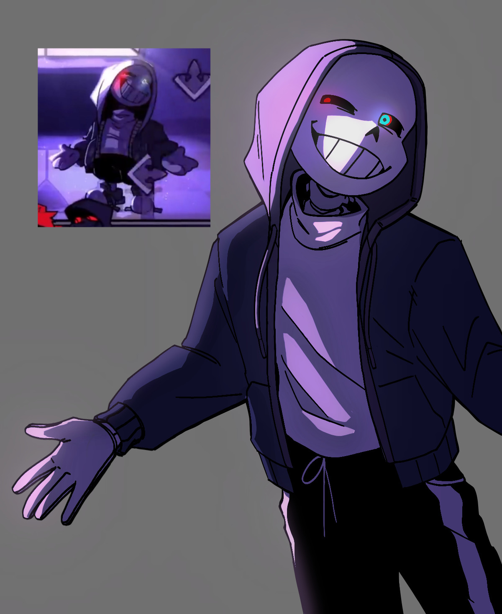
8/25/25
just goofing around in wiggly paint... flowey is a still image because the gif gave me a headache
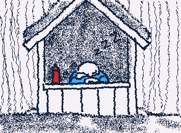
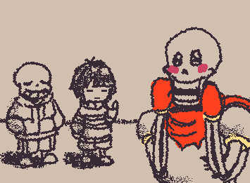
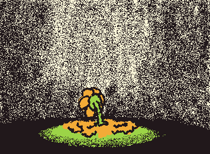
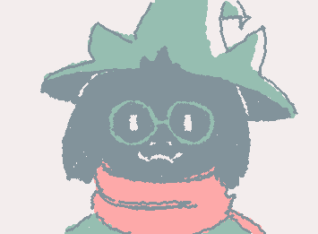
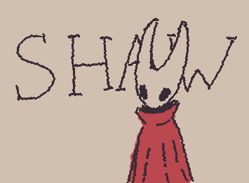
8/17/25
hi guys i'm stuck in my undertale sans phase again and i can't get out please send help please please please
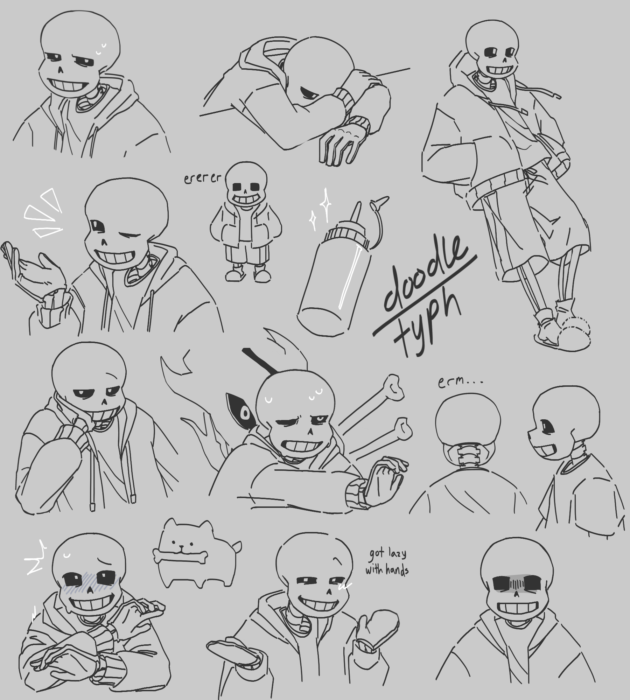
2/26/23, 3/17/23, 3/24/23
SIGHHH my eddsworld era. there was a point in time before this i was super into eddsworld but it just suddenly arose out of me again in 2023. you can tell my favorite was tord unfortunately
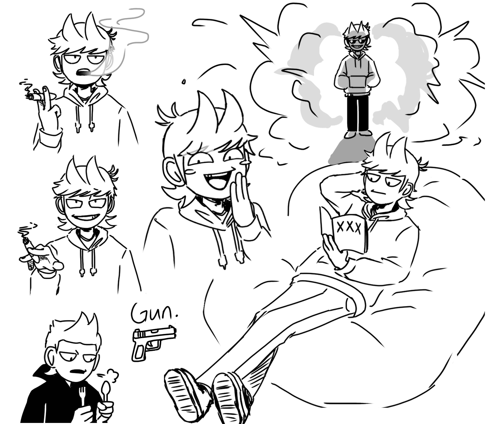
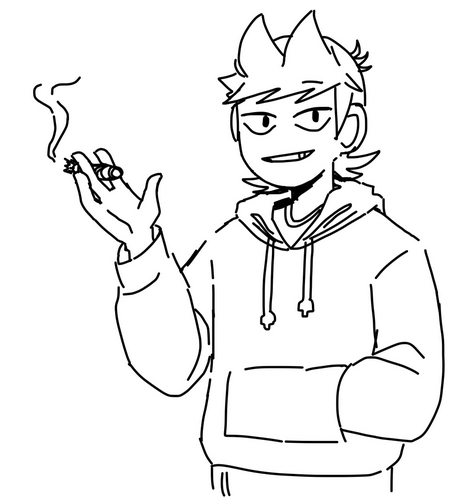
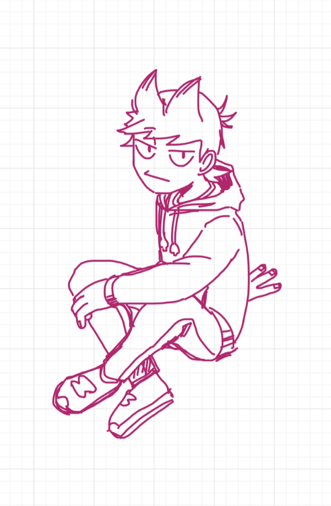
9/24/22
lucia plume from punishing gray raven. sigh i kinda miss pgr but im better off without gacha games
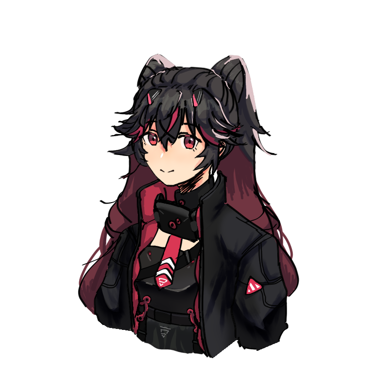
12/17/22
this wasnt actually drawn on this date but for some reason its the earliest record of this doodles and accompanied with me saying "look my old sans drawing!" i legit can't find the original date. anyways haha funny joke
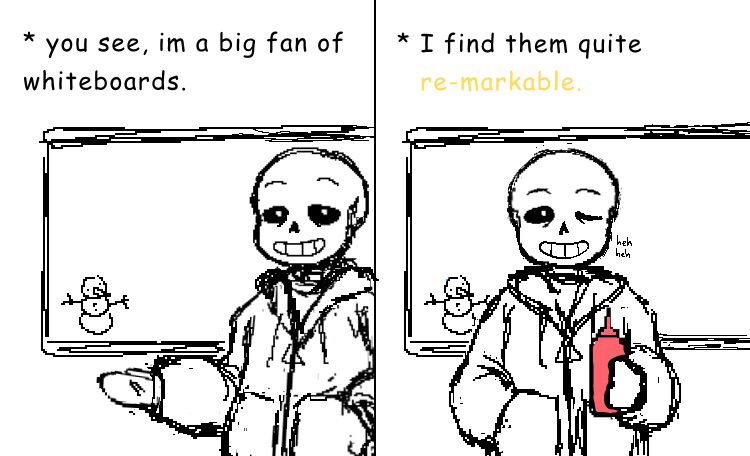